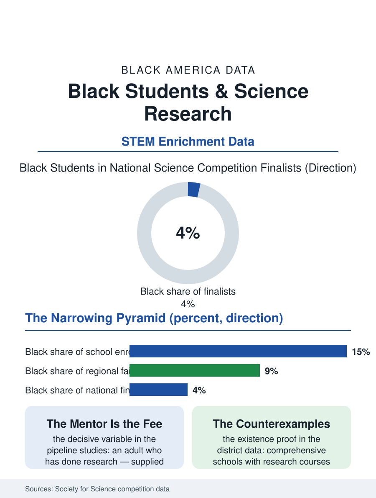

Black Education
The Pyramid: Black Students and Science Research
Science competitions narrow from a universal school fair to a laboratory-resourced national stage, and Black finalists measure in the low single digits. The science fair file.

The science fair is where a student first does science rather than studying it: a question, a method, a board, and a judge with questions. Black students participate in competitive science research at rates far below their enrollment in the national competition data, and the gap widens at each level, school fair to regional to the national stage, in the pattern of a pipeline leaking at every joint. This article reads the science fair file.
The Pyramid's Arithmetic
The structure of the system is a pyramid with public money at its base and private resources increasingly decisive toward its peak. The school fair is nearly free and nearly universal where schools run one; the regional fair adds travel, materials, and a mentor's eye; the national competitions, the Regeneron Science Talent Search and the International Science and Engineering Fair, crown projects that increasingly originate in university laboratories, with equipment, datasets, and mentorship no household supplies. The participation data track the consequence: Black students appear in the national finalist pools in the low single digits as a share, year after year, in a country where they are fifteen percent of the school population. The semifinalist lists tell the geographic story, clustering in the magnet and suburban schools whose research programs are curricular, staffed by teachers whose job includes the research class, while the comprehensive schools serving most Black students run the fair as an extracurricular garnish if at all. The materials economy is the quiet filter at the base: the project that requires the sensor kit, the culture media, the statistical software, competes against the project built from the kitchen, and the judging, whatever its intentions, reads polish as promise in the pattern the debate file records.
Mentorship Is the Real Entry Fee
Every study of the pipeline returns to the same variable: the adult who has done research and recognizes a researchable question in a fourteen-year-old's curiosity. Black students in the survey data report the least access to scientists in their families' networks, unsurprising given the research workforce's own demographics in the science files, so the school's provision of that adult is decisive in a way it is not for the child of engineers. The interventions that measurably move Black participation share one design: they institutionalize the mentorship rather than hoping for it, research courses inside the school day with university partnerships, summer laboratory placements with stipends that replace the summer job, and competition coaching treated as a staffed program rather than a teacher's hobby. Several urban districts and HBCU partnership programs run exactly this design and produce regional and national finalists from comprehensive schools at rates the pyramid says should not happen, which the file records as the existence proof. The subject matter of Black students' projects, when the mentoring is there, skews toward the questions their communities hand them, environmental exposures, health disparities, neighborhood data, research agendas the professional field chronically understaffs, so the pipeline's leak is not only the students' loss but the science's.
The Board and the Door
The fair's defenders and critics both appear in the file honestly. The critics note the competition's drift toward resourced spectacle, the professionalized project as a credentialing commodity in the admissions economy, purchased in the currency of laboratory access. The defenders answer with the alumni data: science fair alumni populate STEM degrees and research careers at rates that survive controls for prior achievement, the fair functioning as the identity-forming experience, I am a person who does research, that the persistence literature values above any single skill. For Black students both readings converge on the same policy: the experience works, the access is rationed, and the rationing mechanism, mentorship and materials inside the school day versus purchased outside it, is a design choice districts make annually. The science fair file closes at the gymnasium on judging morning, where the boards stand in rows and the whole distribution problem is visible at a glance: which schools' boards show laboratory lettering and which show the kitchen experiments, which children have a scientist's phone number and which have a search engine. The questions on the boards are equally curious in both rows. The file's data argue that curiosity was never the variable, and that a system which tests for it while supplying its tools this unevenly is measuring its own provision and calling the measurement talent.
More in Black Education
Black Educational Attainment: High School Parity, the College Gap
About 89 percent of Black adults hold a high school diploma and one in four holds a bachelor's degree or higher — the attainment ladder, the college completion gap, and the generational trend.
Historically Black Colleges and Universities: Enrollment and Degrees
More than 100 HBCUs enroll roughly 290,000 students and award about one in six Black bachelor's degrees — an outsized share from a small sector. The federal education data.
Black College Enrollment: 2.4 Million Students
About 2.4 million Black students are enrolled in American colleges — nearly two-thirds of them women. The NCES enrollment data by sector, level, and trend.
Source: Society for Science (Regeneron STS and ISEF) participation data; science education pipeline research.